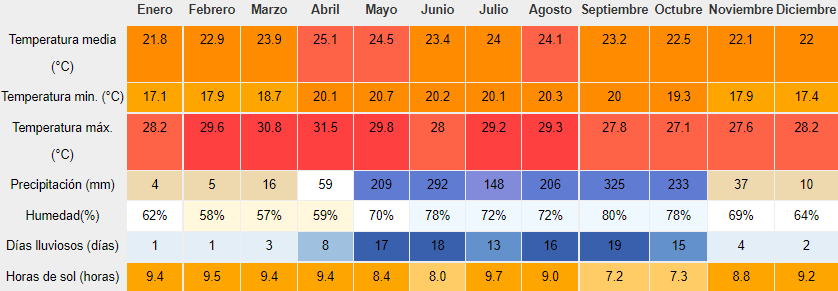

Más sobre Santa Ana...
Santa Ana
Santa Ana es un departamento ubicado en la zona occidental de El Salvador. Su cabecera es la ciudad de Santa Ana.
Más info...
Municipios
- Santa Ana
- Chalchuapa
- Coatepeque
- El Congo
- Candelaria de la Frontera
- El Porvenir
- Masahuat
- Metapán
- San Antonio Pajonal
- San Sebastián Salitrillo
- Santa Rosa Guachipilín
- Santiago de la frontera
- Texistepeque

Datos Históricos
· Desde el período preclásico el departamento de Santa Ana fue habitado por grupos mayas. Lugares representativos de esta cultura en el área son los sitios arqueológicos (de El Trapiche, Tazumal y Casa Blanca).
Ver más...· Entre 1200 y 1400, el actual territorio de Santa Ana fue ocupado por Náhuas de Kuskatan, como parte del Señorío de Cuzcatlán. Entre 1528 y 1540 la zona fue conquistada y pacificada por conquistadores españoles. Durante la colonización española perteneció a la Alcaldía mayor de San Salvador y después a la Intendencia de San Salvador, que a su vez constaba de dos partidos o distritos: Santa Ana y Metapán.
· Desde 1824 (año en que la Alcaldía Mayor de Sonsonate y la Intendencia de San Salvador se unificaron) perteneció al departamento de Sonsonate. El departamento de Sonsonate abarcaba el territorio que hoy compone el mismo departamento y los de Ahuachapán y Santa Ana.

Hidrografía
Ríos
- Lempa
- Guajoyo
- Suquiapa
- El Molino
- Apanteos
- El Sauce
Lagos/Lagunas
- Coatepeque
- Guija
- Cuscachapa
- San Diego
- Metapán

Personajes
- General Tomás Regalado
- Pedro José Escalón
- David Granadino
- Óscar Alberto Quiteño
- Emiliano Rivera Landaverde
- General Salvador Castaneda Castro

Otros datos interesantes...
Religión
· En Santa Ana hay 2 religiones que se practican mucho, siendo éstas el Catolicismo y el Protestantismo. El Catolicismo representa el 50% de la población y el Protestantismo representa el 40%, dividido en muchas denominaciones; el 6% de la población no pertenece a ninguna religión y el 4% pertenece a otras religiones.
Ver más...Demografía
· El departamento de Santa Ana de acuerdo con el censo de población de 2007, en términos de raza el departamento tenía: 87.59% Mestizos, 11.88% Blancos, 0.28% Otros, 0.21% Negros y 0.04% Indígenas.
Turismo
· Los sitios turísticos más destacables son los turicentros de Sihuatehuacán y Cerro Verde, los lagos de Coatepeque y Güija, la presa hidroeléctrica del Guajoyo, los bosques de Montecristo y San Diego, las iglesias coloniales de Metapán, Chalchuapa, Texistepeque y Ostúa, la Catedral de Santa Ana, el Teatro de Santa Ana, los balnearios del Trapiche, Galeano, el Coco y los milagros, las lagunas de Cuzcachapa y Metapán.
Clima
En El Salvador existen dos estaciones y dos transiciones durante el año: la estación seca (14 de noviembre al 19 de abril) y la estación lluviosa (21 de mayo al 16 de octubre); y las transiciones seca-lluviosa (20 de abril al 20 de mayo) y lluviosa-seca (17 de octubre al 13 de noviembre).
El clima es muy cálido, con una media anual de 33 grados, pero tiene pocos meses verdaderamente tropicales y bochornosos. Hace calor todo el año. Debido a la estación más seca, la mejor época para viajar es de noviembre a abril. Los días lluviosos más frecuentes son de mayo a octubre.
| Parámetros climáticos promedios Santa Ana |  |
|---|